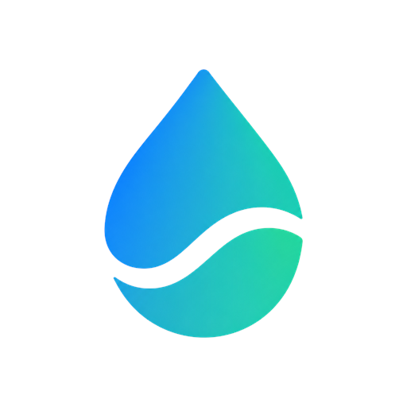

DeskFlow
Office wellness for Android
A healthier workday at your desk
Reminders and one-tap logging for water, coffee or tea at the right time, active breaks, the 20-20-20 eye rule, standing up and lunch, all built around your work schedule.
- Free, with optional Premium
- No account needed
- Your logs stay on your phone
- 14 languages
DeskFlow · Today
Your healthy workday
72Very good
- Water5/9
- Active breaks5/5
- Stand up3/8
- Eyes 20-20-204/8
 DeskFlow · now
DeskFlow · now
Drink water (250 ml)
A glass of water now keeps your energy and focus up.
I drank waterSnooze 10 min
Features
Small habits, timed to your workday
Set your schedule once. Reminders only ring during your work hours, and you can answer “Yes” right from the notification. Every glass, break and stretch adds up to your daily wellness score.
-
Water
Hydration reminders and a daily goal, with an extra glass for every coffee. Log each glass with one tap.
-
Coffee or tea at the best time
DeskFlow plans your cups around your wake-up time, work schedule and natural energy dips, and warns you before your caffeine cutoff so your sleep stays safe.
-
Active breaks
Short guided breaks with stretching, breathing and quick walks, so you step away from the screen regularly.
-
20-20-20 eye rule
Every 20 minutes, look at something about 6 meters (20 feet) away for 20 seconds, with a guided countdown.
-
Stand up and move
Reminders to get up from your chair and keep your circulation going, plus an alert when you've been sitting too long.
-
Lunch away from the screen
A heads-up before lunch, a reminder to step away, and a nudge before you get back to work.
-
Focus timer
Timed focus blocks for deep work, counted automatically when they finish.
-
Wellness score
A daily score from 0 to 100 that shows at a glance how well you looked after yourself today.
-
Insights
Weekly stats with your averages, the habit you miss most and your best hour of the day. Monthly insights come with Premium.
-
Achievements and streaks
Badges and healthy-day streaks that celebrate consistency, not perfection.
-
Home-screen widget
See your score and today's progress without opening the app.
-
CSV report
Download your last 30 days as a CSV file to keep, open in a spreadsheet or share, only when you choose.
Smartwatch · Health Connect
Your watch makes DeskFlow smarter, privately
If you want, connect Health Connect to use steps and sleep from your watch or phone. It's optional, read-only and processed on your phone.
- Steps: the steps you take during your work hours count toward your movement goal, and you see today's total.
- Sleep: your real wake-up time adjusts the best moment for your coffee, and you see how long you slept.
- Read-only: DeskFlow never writes or changes anything in Health Connect.
- Private: your health data is never uploaded, shared or sold, and never used for ads.
- Your choice: disconnect anytime. DeskFlow works fully without it.
Works with watches and bands that sync with Health Connect, such as Samsung Galaxy Watch, Pixel Watch, Fitbit, Garmin or Xiaomi. In the free version you unlock the connection once by watching 3 short videos; with Premium it's instant.
How DeskFlow handles Health Connect data · Consumer Health Data Privacy Policy
Steps today
6,240
Sleep
7 h 25 min
Processed on your phone
Privacy
Private by design
No sign-up, no DeskFlow servers and no selling your personal information.
-
No account
No sign-up and no login. Install the app, set your schedule and you're ready.
-
Stored on your phone
Your settings, logs and achievements live in the app's private storage. We never receive them.
-
Health data stays local
Steps and sleep are read only with your permission, processed on your phone and never used for ads.
-
Upfront about ads
The free version shows Google ads, personalized only where you consent or the law allows. Premium removes them.
Languages
Available in 14 languages
DeskFlow follows your phone's language, or you can choose one in the app's settings.
- English
- Español
- Português
- Français
- Deutsch
- Italiano
- 日本語
- 한국어
- Русский
- Türkçe
- Bahasa Indonesia
- हिन्दी
- Nederlands
- Polski
FAQ
Frequently asked questions
Is DeskFlow free?
Yes. DeskFlow is free with ads. DeskFlow Premium is optional (monthly, yearly or a one-time lifetime purchase) and removes ads and unlocks extras such as monthly insights, reports without ads and the full exercise library.
Do I need an account?
No. There's no sign-up or login. Install the app, set your work schedule and you're ready.
Is my health data uploaded?
No. If you connect Health Connect, DeskFlow reads your steps and sleep on your phone and saves only daily totals there. It never uploads them to a server, never shares or sells them and never uses them for ads.
They only leave the app if you decide so: the CSV report you can export includes your daily steps and sleep minutes, and it goes wherever you send it. If your phone's Google backup is on, Android also includes DeskFlow's data in your own encrypted backup. Details in the privacy policy.
Where is my data stored?
On your phone, in DeskFlow's private storage. We don't run servers and never receive your logs. Daily logs older than 400 days are deleted automatically. If Google backup is on, Android may keep an encrypted copy in your Google account so you can restore it on a new phone.
Do I need a smartwatch?
No. All reminders and logging work with just your phone. A watch or band that syncs with Health Connect only adds steps and sleep.
Why do I see ads, and can I control them?
Ads keep DeskFlow free. They're served by Google AdMob and personalized only where you consent or the law allows. Where Google's consent message applies, you can change your choice anytime in Settings → Ad privacy. You can also reset or delete your advertising ID in Android's settings, or remove ads entirely with Premium.
How do I cancel Premium?
In the Google Play app, tap your profile picture, then Payments & subscriptions → Subscriptions → DeskFlow → Cancel subscription. Uninstalling the app doesn't cancel it. You keep Premium until the end of the period you already paid for.
My reminders arrive late. What can I do?
Some phones pause apps to save battery. Set DeskFlow's battery use to “Unrestricted” (or “Don't optimize”), allow notifications, and allow “Alarms & reminders” for DeskFlow. The app walks you through these settings during setup.
How do I delete my data?
Clear DeskFlow's storage in your phone's settings, or uninstall the app. Follow the step-by-step guide.
Is DeskFlow a medical app?
No. DeskFlow is a general wellness app. It isn't a medical device and doesn't give medical advice, diagnosis or treatment.
Is there an iPhone version?
No. DeskFlow is only available for Android, on Google Play.